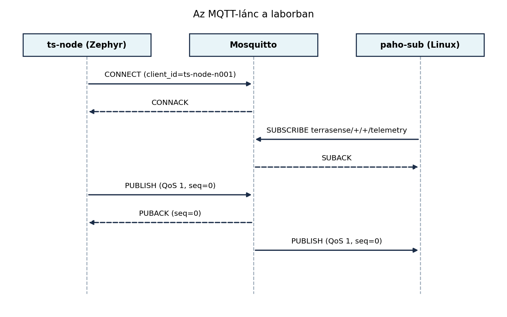

A MQTT QoS, munkamenetek, retain, Last Will és
MQTT 5 alfejezetben elméletben már ismerjük az MQTT fogalmait, de a
TerraSense-rendszer egyetlen rétege sem működik, ha a
ts-node nem tud valódi MQTT-üzenetet eljuttatni az
üzenetközvetítőhöz (brokerhez). Ebben az alfejezetben végre összekötjük
a korábban felépített labor-elemeket: a Zephyr native_sim
célon futtatott ts-node felépít egy újracsatlakozó
MQTT-publikálót, a Dockerben futó Mosquitto brokert a A labor felállítása: Linux host, Docker, Zephyr,
Mosquitto, Java alfejezetben létrehozott compose-vázból indítjuk, és
Linux oldalon egy C-ből használt Paho-előfizetővel ellenőrizzük a teljes
láncot. Ezzel a lánccal később a gateway (A ts-gw
szolgáltatás C++-ban: protokollfordítás MQTT-re), a biztonságos
kommunikáció (Biztonságos kapcsolat: TLS 1.3, mTLS
és DTLS az MQTT/CoAP alatt) és a záróprojekt (Záróprojekt: a teljes TerraSense rendszer összeállítása
és átvétele) is erre épít.
A Zephyr MQTT-kliens API-ja a Zephyr saját hálózati stackjére és a
socket API-ra épül. A kliens nem külön szálat indít, hanem az alkalmazás
felelős az úgynevezett input/live loop futtatásáért. A
kapcsolat felépítése után a mqtt_input() feldolgozza a
bejövő MQTT-vezérlő csomagokat, a mqtt_live() pedig a
keepalive időzítést tartja fenn (PINGREQ). A Zephyr MQTT-könyvtár a QoS
1 PUBLISH-t nem tárolja és nem küldi újra: a PUBACK-ot az
MQTT_EVT_PUBACK esemény jelzi, a nyugtázatlan üzenet
újraküldése (dup_flag=1, ugyanazzal a
message_id-val, újracsatlakozás után) az alkalmazás
dolga.
Definíció. Input/live loop: az
MQTT-kliens könyvtár által megkövetelt, az alkalmazás ciklusában
ismételten hívott eljáráspár. Az mqtt_input() olvassa a
socketről a bejövő bájtokat, és meghívja az eseménykezelőt; az
mqtt_live() karbantartja a kapcsolat állapotát: keepalive
ping, újracsatlakozás előkészítése; a nyugtázatlan QoS 1 üzenetet nem
tárolja és nem küldi újra. Ha a loop kimarad, a broker a
keepalive-időtúllépés után lezárja a kapcsolatot.
Definíció. Exponenciális backoff: újracsatlakozási stratégia, amelyben két próba közötti várakozási idő a sikertelen kísérletek számával exponenciálisan nő, általában felső korláttal. Alakja: , ahol a sikertelen próbák száma. Ez megelőzi a hálózati vihart és kíméli az akkumulátort.
A Paho MQTT C kliens ezzel szemben egy Linux-host könyvtár; a
laborban a MQTTClient API-t (libpaho-mqtt3c)
használjuk callbackes („asynchronous”, háttérszálas) üzemmódban – ez nem
azonos a külön MQTTAsync API-val
(libpaho-mqtt3a): MQTTClient_create(),
MQTTClient_setCallbacks(),
MQTTClient_connect(), MQTTClient_subscribe(),
majd a callback szálán érkező üzenetre várunk. Ebben a módban a Paho
saját fogadószálat indít, ezért a MQTTClient_receive() nem
használható.
Az alábbi sorrenddiagram a labor MQTT-láncát mutatja.

Az ábra szöveges összefoglalása: a ts-node csatlakozik a
brokerhez, a Linux paho-sub feliratkozik a
terrasense/+/+/telemetry wildcard topicra. A
ts-node publikál egy QoS 1 üzenetet, a broker nyugtázza,
majd továbbítja a feliratkozott kliensnek.
A laborban az MQTT 3.1.1-et használjuk, mert a Zephyr kliens ezt stabilan támogatja (ellenőrzési igény: a konkrét API és a támogatott protokollverzió a Zephyr kiadásától függhet). A production rendszerben az MQTT 5 bevezethető, ha a property-k és a munkamenet-kezelés előnyeit ki akarjuk használni, de a jelen tananyag a 3.1.1-re épül.
| Döntés | Választás a laborban | Indoklás |
|---|---|---|
| Hol fut az MQTT-kliens? | A ts-node-on |
A IP az eszközön: IPv6, 6LoWPAN, Thread és a Zephyr hálózati stack alfejezetben bemutatott modell szerint a csomópont közvetlenül a brokerhez beszél. |
| MQTT protokollverzió | 3.1.1 | Széles körű kompatibilitás; a Zephyr kliens ezt biztosítja. |
| QoS telemetriához | 1 (at least once) | A későbbi idempotens ingest (Ingest: MQTT-ből a backendbe, idempotensen) megköveteli az üzenetek legalább egyszeri kézbesítését. |
| Clean session | true | A native_sim-eszköznek nincs szüksége a munkamenet
újrafelvételére; a valós eszköznél ezt a MQTT QoS,
munkamenetek, retain, Last Will és MQTT 5 alfejezetben tárgyalt
szempontok szerint állítjuk be. |
| Autentikáció | anonim (labor) | TLS és jelszó/tanúsítvány a Biztonságos kapcsolat: TLS 1.3, mTLS és DTLS az MQTT/CoAP alatt alfejezetben kerül be. |
A labor célja: a ts-node Zephyrben MQTT-n publikál a
terrasense/gh1/n001/telemetry topicra, a Mosquitto a
Dockerben fogadja, és egy Linuxon futó Paho C előfizető megjeleníti az
üzenetet. A labor nem használ valós hardvert; minden a
native_sim boardon és a hoston fut.
Munkakönyvtár:
mkdir -p ~/iot-labor/i028/ts-node-mqtt/src
mkdir -p ~/iot-labor/i028/paho-sub
cd ~/iot-labor/i028A korábban létrehozott
~/iot-labor/stack/mosquitto/mosquitto.conf fájlt
használjuk; a labor nem módosítja, mert a közös stack más fejezetek
laborjaival is fut. A fájl tartalma (a labor
felállítása: Linux host, Docker, Zephyr, Mosquitto, Java
alfejezetben létrehozott két sor):
listener 1883
allow_anonymous trueHa a naplózást részletesebbre akarod állítani, a közös konfigurációt
bővítsd a log_type all sorral, de ezt a többi labor miatt
jelezd és ne a közös fájlban tedd.
A ~/iot-labor/stack/compose.yaml releváns részlete (a
szolgáltatás és a konténer neve is lab-broker):
services:
lab-broker:
image: eclipse-mosquitto:2.0.18
container_name: lab-broker
ports:
- "127.0.0.1:1883:1883"
volumes:
- ./mosquitto/mosquitto.conf:/mosquitto/config/mosquitto.conf:ro
healthcheck:
test: ["CMD", "mosquitto_sub", "-t", "$$SYS/#", "-C", "1", "-W", "1"]
interval: 10s
timeout: 3s
retries: 5Indítsuk el a brokert:
cd ~/iot-labor/stack
docker compose up -d lab-broker
docker ps | grep lab-brokerVárt kimenet: a lab-broker konténer fut, és a 1883-as
port elérhető a hoston.
native_sim célonHozzuk létre a ts-node-mqtt alkalmazást. A
prj.conf:
CONFIG_NETWORKING=y
CONFIG_NET_IPV4=y
CONFIG_NET_TCP=y
CONFIG_NET_SOCKETS=y
CONFIG_NET_DRIVERS=y
CONFIG_NET_SOCKETS_OFFLOAD=y
CONFIG_NET_NATIVE_OFFLOADED_SOCKETS=y
CONFIG_POSIX_API=y
CONFIG_MQTT_LIB=y
CONFIG_TEST_RANDOM_GENERATOR=y
CONFIG_MAIN_STACK_SIZE=2048A CONFIG_NET_NATIVE_OFFLOADED_SOCKETS=y a
native_sim úgynevezett NSOS (native simulator offloaded
sockets) módját kapcsolja be. Ebben a módban a Zephyr socket-hívásai a
host Linux BSD socket API-ját használják, ezért a 127.0.0.1
a host loopback interfésze, és a Dockerben futó, host
1883-as portra publikált broker elérhető. NSOS nélkül a
native_sim a Zephyr saját hálózati stackjét használná,
amelynek nincs automatikus útja a host loopbackjére: ahhoz TAP-interfész
(zeth) vagy más hostoldali hálózati összekötés kellene,
ahogy az IP az eszközön: IPv6, 6LoWPAN, Thread és a
Zephyr hálózati stack alfejezet tárgyalja. Ezért itt nem adunk meg
CONFIG_NET_CONFIG_MY_IPV4_ADDR értéket: a címet nem a
Zephyr stackje, hanem a host socketrétege kezeli.
A CMakeLists.txt:
cmake_minimum_required(VERSION 3.20.0)
find_package(Zephyr REQUIRED HINTS $ENV{ZEPHYR_BASE})
project(ts-node-mqtt)
target_sources(app PRIVATE src/main.c)A src/main.c:
#include <zephyr/kernel.h>
#include <zephyr/net/socket.h>
#include <zephyr/net/mqtt.h>
#include <zephyr/random/random.h>
#include <errno.h>
#include <stdbool.h>
#include <string.h>
#define SERVER_ADDR "127.0.0.1"
#define SERVER_PORT 1883
#define CLIENT_ID "ts-node-n001"
#define TOPIC_TELEMETRY "terrasense/gh1/n001/telemetry"
#define TOPIC_STATE "terrasense/gh1/n001/status"
#define PUBLISH_INTERVAL_MS 5000
#define CONNECT_TIMEOUT_MS 5000
#define BACKOFF_BASE_MS 1000
#define BACKOFF_MAX_MS 32000
#define BACKOFF_MAX_SHIFT 5
static uint8_t rx_buffer[512];
static uint8_t tx_buffer[512];
static struct mqtt_client client;
static struct sockaddr_storage broker;
static struct pollfd fds[1];
static int nfds;
static bool connected;
static uint32_t seq;
static uint16_t next_message_id = 1;
static void broker_init(void)
{
struct sockaddr_in *addr = (struct sockaddr_in *)&broker;
addr->sin_family = AF_INET;
addr->sin_port = htons(SERVER_PORT);
inet_pton(AF_INET, SERVER_ADDR, &addr->sin_addr);
}
static void clear_fds(void)
{
nfds = 0;
}
static void mqtt_evt_handler(struct mqtt_client *const c,
const struct mqtt_evt *evt)
{
ARG_UNUSED(c);
switch (evt->type) {
case MQTT_EVT_CONNACK:
if (evt->result == 0) {
connected = true;
printk("MQTT connected (CONNACK)\n");
} else {
printk("CONNACK error: %d\n", evt->result);
}
break;
case MQTT_EVT_DISCONNECT:
printk("MQTT disconnected: %d\n", evt->result);
connected = false;
clear_fds();
break;
default:
break;
}
}
static uint16_t alloc_message_id(void)
{
uint16_t id = next_message_id++;
if (next_message_id == 0) {
next_message_id = 1;
}
return id;
}
static void prepare_fds(void)
{
fds[0].fd = client.transport.tcp.sock;
fds[0].events = POLLIN;
nfds = 1;
}
static int connect_mqtt(void)
{
int rc;
mqtt_client_init(&client);
client.broker = &broker;
client.evt_cb = mqtt_evt_handler;
client.client_id.utf8 = (const uint8_t *)CLIENT_ID;
client.client_id.size = strlen(CLIENT_ID);
client.protocol_version = MQTT_VERSION_3_1_1;
client.clean_session = 1;
client.keepalive = 60;
client.rx_buf = rx_buffer;
client.rx_buf_size = sizeof(rx_buffer);
client.tx_buf = tx_buffer;
client.tx_buf_size = sizeof(tx_buffer);
client.transport.type = MQTT_TRANSPORT_NON_SECURE;
rc = mqtt_connect(&client);
if (rc != 0) {
return rc;
}
prepare_fds();
rc = poll(fds, nfds, CONNECT_TIMEOUT_MS);
if (rc < 0) {
rc = -errno;
} else if (rc == 0) {
rc = -ETIMEDOUT;
} else {
rc = mqtt_input(&client);
}
if (rc != 0 || !connected) {
mqtt_abort(&client);
clear_fds();
return rc != 0 ? rc : -ECONNREFUSED;
}
return 0;
}
static int publish_telemetry(void)
{
char payload[128];
int len = snprintk(payload, sizeof(payload),
"{\"node_id\":\"n001\",\"seq\":%u,\"ts\":0}",
(unsigned int)seq);
struct mqtt_publish_param param;
int rc;
if (len < 0 || (size_t)len >= sizeof(payload)) {
return -ENOMEM;
}
memset(¶m, 0, sizeof(param));
param.message.topic.qos = MQTT_QOS_1_AT_LEAST_ONCE;
param.message.topic.topic.utf8 = (const uint8_t *)TOPIC_TELEMETRY;
param.message.topic.topic.size = strlen(TOPIC_TELEMETRY);
param.message.payload.data = payload;
param.message.payload.len = len;
param.message_id = alloc_message_id();
param.dup_flag = 0;
param.retain_flag = 0;
rc = mqtt_publish(&client, ¶m);
if (rc != 0) {
printk("Publish failed: %d\n", rc);
return rc;
}
printk("Published: %s\n", payload);
seq++;
return 0;
}
static uint32_t backoff_delay(unsigned int attempt)
{
unsigned int shift = MIN(attempt, BACKOFF_MAX_SHIFT);
uint32_t delay = (uint32_t)BACKOFF_BASE_MS << shift;
uint32_t jitter;
delay = MIN(delay, (uint32_t)BACKOFF_MAX_MS);
/* Legfeljebb 25%-os véletlen jitter, eszközönként eltérő: több node ne próbálkozzon egyszerre. */
jitter = sys_rand32_get() % (delay / 4U + 1U);
return MIN(delay + jitter, (uint32_t)BACKOFF_MAX_MS);
}
int main(void)
{
int attempt = 0;
int64_t next_publish = 0;
printk("ts-node MQTT publisher starting\n");
broker_init();
while (1) {
if (!connected) {
int rc = connect_mqtt();
if (rc != 0) {
uint32_t backoff = backoff_delay(attempt);
printk("Connect failed (%d), retry in %u ms\n", rc, backoff);
k_sleep(K_MSEC(backoff));
if (attempt < BACKOFF_MAX_SHIFT) {
attempt++;
}
continue;
}
attempt = 0;
next_publish = k_uptime_get() + PUBLISH_INTERVAL_MS;
}
if (nfds > 0) {
int rc = poll(fds, nfds, 100);
if (rc < 0) {
printk("poll failed: %d\n", errno);
mqtt_abort(&client);
connected = false;
clear_fds();
continue;
}
if (rc > 0 && mqtt_input(&client) != 0) {
printk("mqtt_input failed\n");
mqtt_abort(&client);
connected = false;
clear_fds();
continue;
}
}
if (connected) {
int rc = mqtt_live(&client);
if (rc != 0 && rc != -EAGAIN) {
printk("mqtt_live failed: %d\n", rc);
mqtt_abort(&client);
connected = false;
clear_fds();
continue;
}
}
if (connected && k_uptime_get() >= next_publish) {
if (publish_telemetry() != 0) {
mqtt_abort(&client);
connected = false;
clear_fds();
continue;
}
next_publish = k_uptime_get() + PUBLISH_INTERVAL_MS;
}
}
}A kód magyarázata:
broker_init() a 127.0.0.1:1883 végpontot
tölti fel a kliensstruktúrába. Az NSOS miatt ez a host loopbackje, ahol
a Docker broker publikál.connect_mqtt() beállítja a client id-t, a
clean_session-t és a keepalive-ot, majd meghívja az
mqtt_connect()-et. Az mqtt_connect() csak a
CONNECT csomag elküldéséig tér vissza; a kapcsolat akkor jön létre,
amikor a broker CONNACK csomagját az mqtt_input()
feldolgozza. Ezért a függvény poll()-lal vár a socket
olvashatóságára, majd a CONNACK után tér vissza sikerrel.connected jelzőt kizárólag az eseménykezelő állítja:
MQTT_EVT_CONNACK esetén igazra,
MQTT_EVT_DISCONNECT esetén hamisra. A
struct mqtt_client Zephyr 3.7-ben nem tartalmaz
connected mezőt.publish_telemetry() egy minimális JSON payloadot
készít. A ts mezőt most nullával töltjük, hogy a laborban a
lánc működését igazoljuk; a tényleges időbélyeg-konvenciót a Idő az IoT-ban: időbélyeg, időszinkron, sorrend
alfejezet tárgyalja. A message ID-t saját, 1-től 65535-ig körbeforduló
számláló adja, mert a Zephyr 3.7 MQTT API-ban nincs
mqtt_client_get_next_id().poll()-lal vár a bejövő adatra, futtatja az
mqtt_input()/mqtt_live() párost, és a
k_uptime_get() 64 bites órájához kötött határidővel
publikál 5 másodpercenként. A k_uptime_get_32() % 5000 == 0
típusú feltétel azért hibás, mert a ciklus ritkán találja el pontosan az
osztható értéket, és a 32 bites számláló 49 nap után túlcsordul.BACKOFF_MAX_SHIFT miatt a shift és a szorzás soha nem
csordul túl, és a várakozás legfeljebb 32 másodperc. A számított
várakozás legfeljebb 25%-os jitterrel egészül ki, amelyet a
sys_rand32_get() véletlenszámból képezünk (nem az
uptime-ból, mert az egyszerre induló node-okon azonos lenne), és a végén
ismét a 32 másodperces plafonhoz vágunk; így száz egymást követő hiba
után sem lesz negatív vagy rövidre forduló várakozás, és a node-ok nem
próbálkoznak egyszerre. A seq monoton nő, így minden üzenet
egyedi sorszámmal megy ki.clean_session = 1
miatt) a broker nem őrzi a nyugtázatlan QoS 1 üzenetet, ezért a
mqtt_abort() utáni kapcsolatvesztéskor a telemetria
elveszhet: a labor ebben a formájában gyakorlatilag legfeljebb egyszeri
kézbesítést ad. Legalább egyszeri kézbesítéshez az alkalmazásnak
outboxot kell vezetnie (például a sample_msgq mintáit a
MQTT_EVT_PUBACK-ig megtartva, újracsatlakozás után
dup_flag=1-gyel újraküldve), és
clean_session = 0 kell. A laborban ezt az egyszerűség
kedvéért nem valósítjuk meg; a következő minta új seq-csel
megy ki, az ingest pedig idempotens. Parancsoknál viszont a függő
kéréseket külön, tartós outboxban kell vezetni, különben a PUBACK
elvesztésekor a parancs nyugtázatlan marad.Build és futtatás:
cd ~/iot-labor/i028/ts-node-mqtt
west build -b native_sim -p always
./build/zephyr/zephyr.exeVárt kimenet:
ts-node MQTT publisher starting
MQTT connected (CONNACK)
Published: {"node_id":"n001","seq":0,"ts":0}
Published: {"node_id":"n001","seq":1,"ts":0}
...A paho-sub/subscriber.c:
#include <stdio.h>
#include <stdlib.h>
#include <stdatomic.h>
#include <unistd.h>
#include <MQTTClient.h>
#define ADDRESS "tcp://127.0.0.1:1883"
#define CLIENTID "lab-paho-sub"
#define TOPIC "terrasense/+/+/telemetry"
#define QOS 1
static atomic_int delivered;
int msgarrvd(void *context, char *topicName, int topicLen,
MQTTClient_message *message)
{
(void)context;
(void)topicLen;
printf("topic=%s payload=%.*s\n",
topicName, message->payloadlen, (char *)message->payload);
MQTTClient_freeMessage(&message);
MQTTClient_free(topicName);
atomic_store(&delivered, 1);
return 1;
}
void connlost(void *context, char *cause)
{
(void)context;
printf("connection lost: %s\n", cause ? cause : "unknown");
}
int main(void)
{
MQTTClient client;
MQTTClient_connectOptions conn_opts = MQTTClient_connectOptions_initializer;
int rc;
if ((rc = MQTTClient_create(&client, ADDRESS, CLIENTID,
MQTTCLIENT_PERSISTENCE_NONE, NULL))
!= MQTTCLIENT_SUCCESS) {
fprintf(stderr, "create failed: %d\n", rc);
return 1;
}
conn_opts.keepAliveInterval = 20;
conn_opts.cleansession = 1;
if ((rc = MQTTClient_setCallbacks(client, NULL, connlost, msgarrvd,
NULL)) != MQTTCLIENT_SUCCESS) {
fprintf(stderr, "setCallbacks failed: %d\n", rc);
MQTTClient_destroy(&client);
return 1;
}
if ((rc = MQTTClient_connect(client, &conn_opts)) != MQTTCLIENT_SUCCESS) {
fprintf(stderr, "connect failed: %d\n", rc);
MQTTClient_destroy(&client);
return 1;
}
if ((rc = MQTTClient_subscribe(client, TOPIC, QOS))
!= MQTTCLIENT_SUCCESS) {
fprintf(stderr, "subscribe failed: %d\n", rc);
MQTTClient_disconnect(client, 1000);
MQTTClient_destroy(&client);
return 1;
}
printf("waiting on %s\n", TOPIC);
while (!atomic_load(&delivered)) {
sleep(1);
}
MQTTClient_disconnect(client, 1000);
MQTTClient_destroy(&client);
return 0;
}A MQTTClient_setCallbacks() (a Paho dokumentációjában
„asynchronous mode”) háttérszálas üzemmódba kapcsolja a Paho C klienst:
a könyvtár saját fogadószálat indít, és az msgarrvd
callbacket ezen a szálon hívja meg. Ebben az üzemmódban a főszálnak
tilos MQTTClient_receive()-et hívnia; a
szinkron API ötparaméteres
MQTTClient_receive(client, topicName, topicLen, message, timeout)
formája csak a callback nélküli módhoz tartozik. A
delivered jelző atomic_int típusú, mert a
callback és a főszál külön szálon fut; a volatile int nem
garantál szálak közötti láthatóságot.
Telepítés és build (ha a libpaho-mqtt-dev még nincs
fent):
sudo apt install libpaho-mqtt-dev # ellenőrizendő a pontos csomagnév
cd ~/iot-labor/i028/paho-sub
gcc -o sub subscriber.c -lpaho-mqtt3cA -lpaho-mqtt3c a MQTTClient API könyvtára;
a MQTTClient_setCallbacks() ennek ún. aszinkron üzemmódja
(háttérszál), nem a külön MQTTAsync API. A
-lpaho-mqtt3a a MQTTAsync_* függvényeket
tartalmazza, ezért azzal linkelve a MQTTClient_create és
társai nem oldódnak fel (undefined reference).
Futtatás egy másik terminálban, miközben a Zephyr alkalmazás fut:
cd ~/iot-labor/i028/paho-sub
./subVárt kimenet:
waiting on terrasense/+/+/telemetry
topic=terrasense/gh1/n001/telemetry payload={"node_id":"n001","seq":12,"ts":0}Továbbvitt eredmény. Ebben a laborban létrejött a
működő MQTT-lánc: a ts-node a
terrasense/gh1/n001/telemetry topicra publikál QoS 1-gyel,
node_id és monoton seq mezőkkel,
clean_session=1 beállítással. A broker a
stack/compose.yaml lab-broker szolgáltatása
(lab-broker konténer), a Paho C előfizető a hivatkozott
fájl. Ezt a láncot használja a A ts-gw szolgáltatás
C++-ban: protokollfordítás MQTT-re alfejezet, a Biztonságos kapcsolat: TLS 1.3, mTLS és DTLS az
MQTT/CoAP alatt alfejezet, és a Záróprojekt: a
teljes TerraSense rendszer összeállítása és átvétele alfejezet.
Ellenőrzéshez használhatjuk a parancssori
mosquitto_sub-ot is:
mosquitto_sub -h 127.0.0.1 -t 'terrasense/+/+/telemetry' -vEnnek ugyanazt az üzenetfolyamot kell mutatnia, mint a Paho-előfizetőnek. A Zephyr logban a „Published” sorok jelennek meg minden egyes küldésnél.
| Hibatünet | Lehetséges ok | Javítás |
|---|---|---|
| A Zephyr alkalmazás nem csatlakozik | A broker nem fut, vagy a 1883-as port foglalt | docker ps és ss -tlnp ellenőrzése, a
Mosquitto indítása |
| A Zephyr log „MQTT connect failed” | Hálózati konfiguráció hiányzik vagy helytelen | prj.conf ellenőrzése, CONFIG_NETWORKING=y
és IP-beállítások |
| A Paho-sub nem kap üzenetet | A topic wildcard hibás, vagy a feliratkozás nem járt sikerrel | Ellenőrizd a topicot: terrasense/+/+/telemetry, és a
MQTTClient_subscribe() visszatérési értékét |
| A kapcsolat megszakad, és nem áll vissza | A CONNACK-ra nem várunk, vagy a mqtt_connect()
visszatérési értékét nem kezeljük |
A poll() + mqtt_input() várakozás és az
exponenciális backoff kódrész beépítése |
| A broker a Paho-subból kizárja a ts-node-ot | Az MQTT 3.1.1-ben azonos client id miatt a régebbi kapcsolat lezárul | Egyedi CLIENT_ID használata minden kliensnél |
Az input/live loop elhagyása. A Zephyr
MQTT-kliens nem külön szál, és a keepalive-ot az alkalmazásnak kell
karbantartania. Ha a mqtt_live() nem fut, a broker a
keepalive-időtúllépés után lezárja a kapcsolatot.
Újracsatlakozás fix késleltetéssel. Ha minden sikertelen próba után ugyanannyit várakozunk, akkor a hálózati hiba elhárulásakor a csomópont feleslegesen sokat alszik. Az exponenciális backoff a kezdeti gyors újrapróbálkozást és a későbbi energiatakarékos ritmust kombinálja.
A seq nem monoton növekvő. A seq
sorszámmal a későbbi idempotens ingest (Ingest:
MQTT-ből a backendbe, idempotensen) azonosítja az üzeneteket. Ha a
számláló újraindulás után nullázódik, a duplikátumok észrevétlenek
maradnak.
A Last Will elhagyása. A ts-node
normál leállásakor a status topic retained üzenete nem
frissül; a rendszer nem tudja, hogy az eszköz offline lett. A Last Will
beállítása a MQTT QoS, munkamenetek, retain, Last
Will és MQTT 5 alfejezetben leírtak szerint kötelező.
Időbélyeg nélküli vagy uptime-ot használó
payload. A ts mező most placeholder nulla, de éles
rendszerben UTC epoch ms kell. Az uptime nem hordoz globális sorrendet,
ezért a telemetria-sémát a Idő az IoT-ban:
időbélyeg, időszinkron, sorrend alfejezet szerint kell
véglegesíteni.
Miért nem elegendő, ha a Zephyr MQTT-kliensben csak a
mqtt_connect() és a mqtt_publish() hívásokat
használjuk? Mi a szerepe az mqtt_input() és az
mqtt_live() hívásoknak?
Egy eszköz a laborban használt exponenciális backoffot használja:
base = 1000 ms, max = 32000 ms. Hány másodperc
a teljes várakozási idő, ha az első öt újracsatlakozási kísérlet mind
sikertelen, és a hatodik kísérlet sikerült? (A várakozás mindig a
sikertelen próba után következik be.)
Módosítsd a ts-node-mqtt/src/main.c fájlt úgy, hogy a
mqtt_connect() előtt beállítod a Last Will üzenetet a
terrasense/gh1/n001/status topicra, retained flaggel és
{"online":false} payloaddal. Tedd hozzá a megfelelő
MQTT-paramétereket, és ellenőrizd a brokeren.
Írj egy új Paho C előfizetőt paho-sub/cmd_sub.c néven,
amely a terrasense/gh1/n001/cmd topicra iratkozik fel, és
minden bejövő parancsot kiír a szabványos kimenetre. Ezzel előkészíted a
Parancsok és konfiguráció lefelé: kézbesítés,
nyugtázás, időkorlát alfejezetet.
Az mqtt_input() olvassa a socketet és feldolgozza a
CONNACK, SUBACK, PUBACK stb. vezérlőcsomagokat. Enélkül a kliens nem
tudná meg a kapcsolatfelvétel eredményét, és a bejövő üzeneteket sem
dolgozná fel. Az mqtt_live() a keepalive-ot (PINGREQ)
küldi; a nyugtázatlan QoS 1 üzenetek újraküldése nem a könyvtár, hanem
az alkalmazás feladata. Ha ezek a hívások hiányoznak, a kapcsolat lejár,
és a kliens nem érzékeli a broker válaszait.
Az első öt sikertelen próba után a várakozások:
| Kísérlet sorszáma | attempt |
Várakozás (ms) |
|---|---|---|
| 1 | 0 | |
| 2 | 1 | |
| 3 | 2 | |
| 4 | 3 | |
| 5 | 4 |
Jitter nélkül összesen:
.
A labor kódja minden várakozáshoz
jittert ad (legfeljebb 250, 500, 1000, 2000, illetve 4000 ms), ezért a
teljes várakozás 31 s és 38,75 s között van. A hatodik kísérlet sikeres,
tehát nem várakozunk utána. (Ha a hatodik is sikertelen lenne, a
max miatt a várakozás 32 s lenne.)
A connect_mqtt() függvényben a
mqtt_client_init() után, de a mqtt_connect()
hívása előtt beállítjuk a Last Will-et. A Zephyr 3.7 MQTT API-ban a will
nem külön mqtt_will_param struktúra, hanem a kliens
will_topic, will_message és
will_retain mezői; a will QoS-e a
will_topic.qos mezőben van:
static const char will_topic_str[] = TOPIC_STATE;
static const char will_payload_str[] = "{\"online\":false}";
static struct mqtt_topic will_topic = {
.topic = {
.utf8 = (const uint8_t *)will_topic_str,
.size = sizeof(will_topic_str) - 1,
},
.qos = MQTT_QOS_1_AT_LEAST_ONCE,
};
static struct mqtt_utf8 will_message = {
.utf8 = (const uint8_t *)will_payload_str,
.size = sizeof(will_payload_str) - 1,
};
static void set_last_will(void)
{
client.will_topic = &will_topic;
client.will_message = &will_message;
client.will_retain = 1;
}A set_last_will() hívást a
connect_mqtt()-on belül közvetlenül a
mqtt_client_init(&client) után helyezzük el, mert az
inicializálás nullázza a kliens mezőit. A will_topic és a
will_message statikus élettartamú, mert a mutatóiknak a
kapcsolat teljes ideje alatt érvényeseknek kell maradniuk.
Ellenőrzés:
mosquitto_sub -h 127.0.0.1 -t 'terrasense/gh1/n001/status' -v -W 5A Zephyr alkalmazás native_sim folyamatát
Ctrl+C-vel leállítva a folyamat nem küld MQTT DISCONNECT
csomagot, ezért a broker a will-t publikálja, és a
{"online":false} üzenetnek meg kell jelennie.
A paho-sub/cmd_sub.c hasonló a
subscriber.c-hez, de a topic
terrasense/gh1/n001/cmd, és a callback minden üzenetet
kiír. Mivel a subscriber.c callbackes (háttérszálas) módot
használ, itt sem szabad MQTTClient_receive()-et hívni: a
callback ne állítson le egy üzenet után, a főszál pedig
while (1) { sleep(1); } ciklussal várjon a folyamat
megszakításáig. Build:
cd ~/iot-labor/i028/paho-sub
gcc -o cmd_sub cmd_sub.c -lpaho-mqtt3cTeszteléshez publikáljunk egy tesztparancsot:
mosquitto_pub -h 127.0.0.1 -t 'terrasense/gh1/n001/cmd' -m '{"cmd":"open_valve","seq":100}'A cmd_sub kiírja a parancsot.
Ebben az alfejezetben működő MQTT-láncot építettünk a TerraSense
laborban. A Zephyr native_sim célon futó
ts-node a ~/iot-labor/i028/ts-node-mqtt/ alatt
egy újracsatlakozó MQTT-publikálót valósít meg:
mqtt_connect() a brokerhez, CONNACK-várakozás
poll() + mqtt_input() hívással, majd
mqtt_input()/mqtt_live() az input/live loopban
és mqtt_publish() QoS 1-gyel. A connected
állapotot az eseménykezelő tartja, a message ID-t saját számláló adja.
Az újracsatlakozás exponenciális backoffot használ
base=1000 ms, max=32000 ms paraméterekkel,
legfeljebb 5 shift mellett. A broker a stack/compose.yaml
lab-broker szolgáltatása (lab-broker
konténer), a konfiguráció a
stack/mosquitto/mosquitto.conf-ban hallgat a 1883-as
porton. A Linux oldali Paho C előfizető a
~/iot-labor/i028/paho-sub/subscriber.c fájlban aszinkron
callbackes módban figyel a terrasense/+/+/telemetry
topicra. A továbbvitt eredmény: a
terrasense/gh1/n001/telemetry topic, a
node_id/seq/ts mezőkkel ellátott
JSON payload és a QoS 1 publikálás; ezt építi tovább a gateway (A ts-gw szolgáltatás C++-ban: protokollfordítás
MQTT-re), a biztonság (Biztonságos kapcsolat:
TLS 1.3, mTLS és DTLS az MQTT/CoAP alatt) és a záróprojekt (Záróprojekt: a teljes TerraSense rendszer összeállítása
és átvétele).
mqtt_connect, mqtt_publish,
mqtt_input, mqtt_live függvények pontos
szignatúrája és a CONFIG_MQTT_LIB Kconfig-név az aktuális
Zephyr-kiadásban.native_sim networking:
https://docs.zephyrproject.org/latest/boards/native/native_sim/doc/index.html
– ellenőrizendő az offloaded sockets (NSOS) Kconfig-nevei
(CONFIG_NET_SOCKETS_OFFLOAD,
CONFIG_NET_NATIVE_OFFLOADED_SOCKETS) és a host loopback
használata.allow_anonymous, log_dest és
persistence direktívák pontos szintaxisa a Mosquitto 2.x
verzióban.libpaho-mqtt3c (MQTTClient API) és a
libpaho-mqtt3a (MQTTAsync API) könyvtárak
elérhetősége Ubuntu 24.04-en.